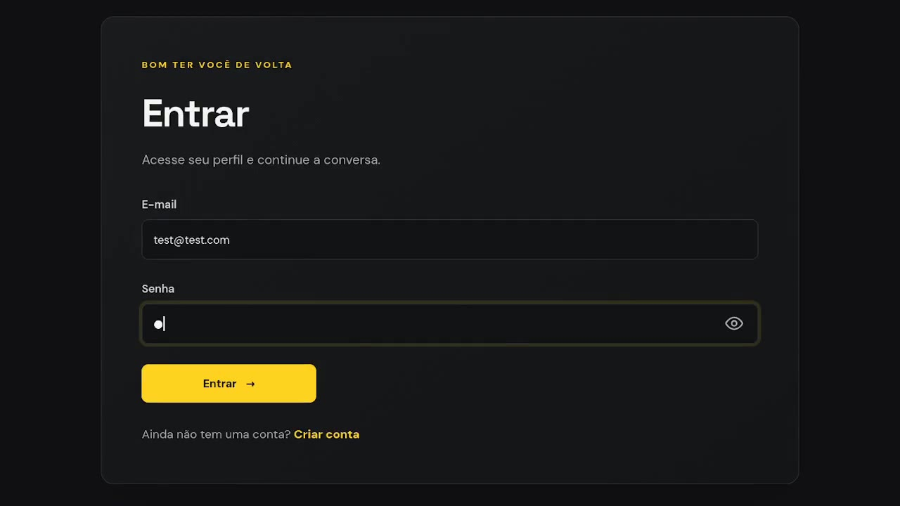

E·P
EM PAUTA
Sobre o projeto
O Em Pauta é uma plataforma dedicada ao universo cinematográfico, onde os usuários podem explorar filmes, consultar informações e compartilhar suas opiniões por meio de comentários.
Desenvolvido com Python e Flask, o projeto reúne funcionalidades como catálogo de filmes, pesquisa, visualização de detalhes, autenticação de usuários, sistema de comentários e gerenciamento de conteúdo.
Funcionalidades
- Catálogo e pesquisa de filmes.
- Páginas de detalhes dos filmes.
- Autenticação e gerenciamento de usuários.
- Comentários e interações.
- Painel administrativo para gerenciamento de conteúdo.
Organização da aplicação
A aplicação adota uma arquitetura em camadas, com separação de responsabilidades entre as partes do sistema. Essa organização ajuda a manter os componentes mais claros e facilita a evolução do projeto.
Interface (HTML · CSS · JavaScript)
↓
Aplicação web (Flask)
↓
Camada de dados (MongoDB · MySQL)
Telas
Algumas telas da aplicação Em Pauta.
Vídeo de apresentação
A demonstração está no player no início desta página. Use os controles para reproduzir ou pausar o vídeo.